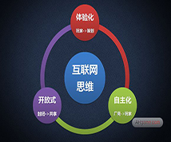
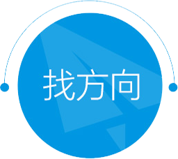
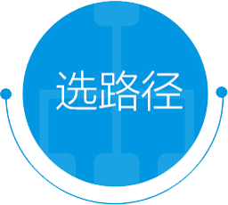

传统企业"互联网+" 转型
-

当前,由梦高速首创的"互联网+"理念已经上升为国家战略.传统企业拥抱互联网已经不再是问题,而是必需.那么问题来了,企业"互联网+"如何转型?
-
互联网带来信息,渠道,产品,服务等商业井喷现象.面临纷繁复杂,瞬息万变的互联网时代,传统企业如何才能拨云见日,找到合适自身的商业模式,成功转型?
-
"互联网+"的本质在于互联网化,企业互联网化如何再造运营模式,管理机制以及组织结构,进而重塑企业的价值链环节
-
企业"互联网+"转型究竟如何实现成功落地?如何避免转型误区,同时扬长避短,最大极限度地降低转型成本与减少风险
我们提供的 服务
围绕着传统企业"互联网+"转型,梦高速提供了企业互联网化的三大战役
在线,互动,联网
卖货服务
随着整个互联网的快速发展，网上卖货成为主流。传统企业究竟如何才能打赢“互联网 + 卖货”战役？易观提出四大解决方案 ： 线上自己卖、线上别人卖、带动线下卖、微商。
聚粉服务
在“互联网+”时代，"粉丝"的意义和重要性得到了空前的提升。易观认为，传统企业要想打赢"聚粉"战役，必须要深刻理解 "聚粉"的"道，法，术，器" ,同时注意各个要点之间的灵活应用和协同运转。
建平台服务
在企业互联网化的过程中，不能简单地将互联网当成渠道或工具，而应将其与企业整个价值链结合起来，形成各个产业链之间协同的生态平台。
我们提供的 价值
-

分析解读政策及互联网大势,助您构建互联网思维,通过咨询资深教练,与导师的互动与指导,成功实现"互联网+"的转型,最大限度的规避风险与转型误区
-
根据企业自身的行业环境和资源背景,为企业量身设计最具操作性的"互联网+"转型路径与方案.同时,设定可量化的目标,分阶段,有步骤,有节奏地执行
-
作为传统企业"互联网+"首选合作伙伴,梦高速一直致力于协助企业进行互联网化转型落地实践,并根据企业长期发展目标与变化加以优化迭代,包括人才培养招聘,组织运营管理,供应链协同,资源对接与整合等一系列问题.